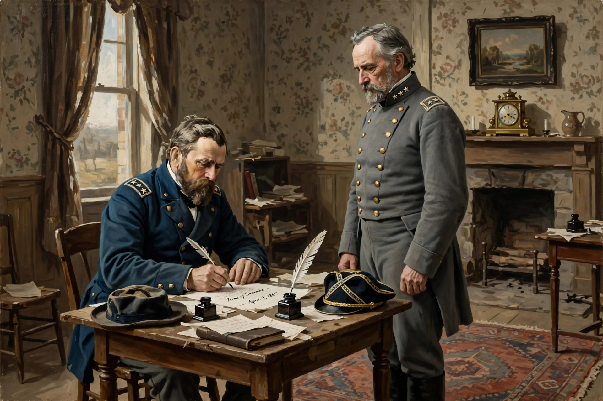

Surrender (military)

Surrender, in military terms, is the relinquishment of control of territory, combatants, fortifications, ships, or armament to another power. A surrender may be accomplished peacefully or it may be the result of defeat in battle. A sovereign state may surrender following defeat in a war, usually by signing a peace treaty or capitulation agreement. A battlefield surrender, either by individuals or by order of officers, normally results in those surrendering becoming prisoners of war.
Signs of surrender
The customary signal of surrender is the white flag, carried by a negotiator or hoisted over a position; under the Hague Conventions, a person waving a white flag is a parlementaire entitled to inviolability, and misuse of the flag is prohibited. Individual soldiers surrender by laying down their arms, raising their hands, or discarding weapons in view of the enemy. Naval vessels signal surrender by striking their colours. Feigning surrender in order to lure an enemy into a trap — perfidy — is a war crime under the law of armed conflict.
Process and instruments
Surrenders are commonly formalised by a written instrument specifying the time of cessation of hostilities, the disposition of forces and equipment, and the treatment of personnel. An unconditional surrender, a term popularised by Ulysses S. Grant in the American Civil War and adopted as Allied policy toward the Axis powers in 1943, requires the surrendering party to accept whatever terms the victor later imposes. Famous instruments include the German surrenders at Reims and Berlin in May 1945 and the Japanese surrender aboard USS Missouri on 2 September 1945. A preliminary cessation of hostilities may instead take the form of an armistice, as in 1918, pending a final settlement.
Treatment of surrendered personnel
Under the Third Geneva Convention of 1949, combatants who have laid down their arms are entitled to prisoner-of-war status and humane treatment; killing an enemy who has surrendered is a grave breach. Historically, however, surrendered garrisons were sometimes massacred, and the risks of surrender have shaped military codes of honour that alternately valorise surrender at the point of futility or stigmatise it as dishonour.
See also
Armistice of 11 November 1918 · Casus belli · Authorization for Use of Military Force
Categories: Warfare · Military law · Surrender